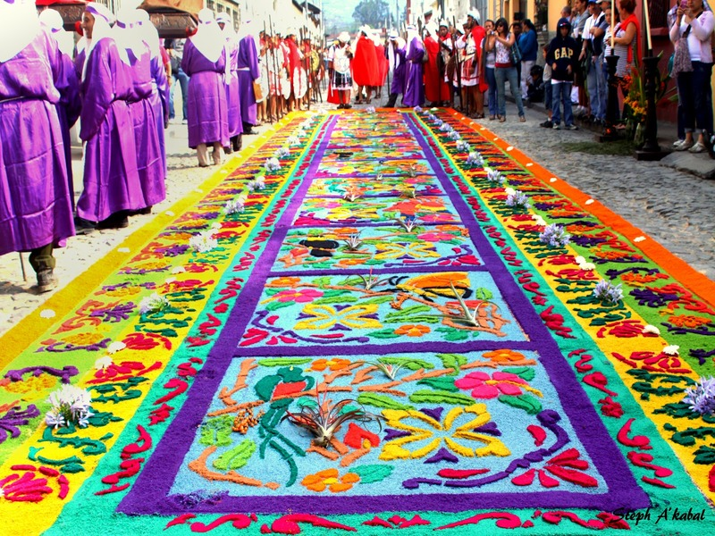

Sobre Nosotros
¿Quién es Doña Consuelo?
Doña Consuelo nació en el corazón del barrio, entre cafecitos, sillas en la banqueta y noticias que nadie pidió… pero todos querían oír.
Con su delantal siempre puesto y su taza de café en mano, Doña Consuelo se ha ganado el respeto y el cariño de toda la comunidad. No hay evento, celebración o problema del que no esté enterada.
Misión
Informar, entretener y reírnos de la vida cotidiana sin mala intención, solo con picardía chapina.
Visión
Ser el chisme más esperado del día (después del café, claro).
Nuestros Valores
Humor: Nos reímos de la vida, no de las personas.
Respeto: El chisme sí, pero con límites y consideración.
Identidad guatemalteca: Orgullosamente chapines en cada historia.
Chisme responsable: Entretenemos sin dañar ni inventar.
